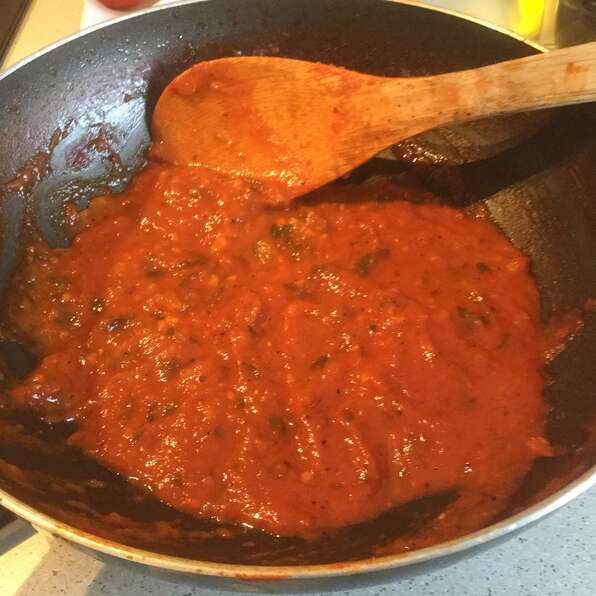

Spaghetti sauce
<
- Fresh Tomatoes
- White Sugar
- Onion
- Spices
- Blanch the fresh tomatoes to remove the skin. Feel free to remove the seeds, but it's not necessary because you can strain the sauce later or leave the seeds in the sauce altogether.
Chop the tomatoes into smaller pieces.
- Add onion and garlic powder to a skillet with olive oil. Cook until translucent, about 5 minutes.
- Add the remaining ingredients and bring to a boil. Reduce the heat and simmer until the sauce thickens, about 1-2 hours. Serve immediately, or let cool and freeze.
If the sauce is too chunky for your liking (or if you want to use it as pizza sauce), run it through a blender or food processor until it reaches your desired consistency.
- The easiest way to thicken tomato sauce is by simply simmering the sauce for longer. The longer you allow it to simmer, the more liquid will evaporate.
If you don't have the time (or patience) to let the sauce simmer longer, you can add a cornstarch slurry (one part cornstarch and one part water). Gradually whisk in the slurry until the sauce reaches your desired consistency.